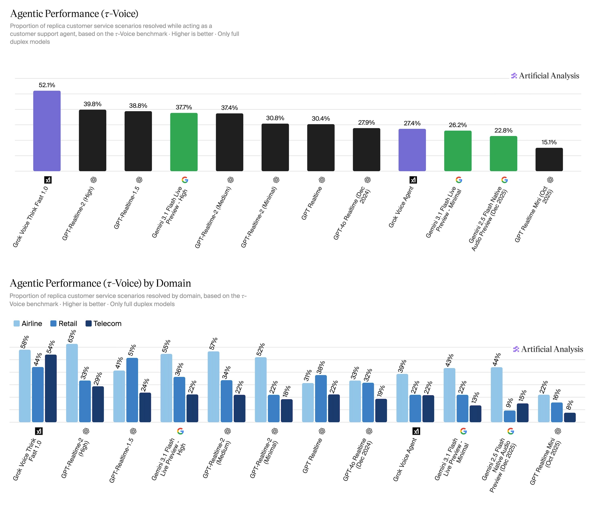
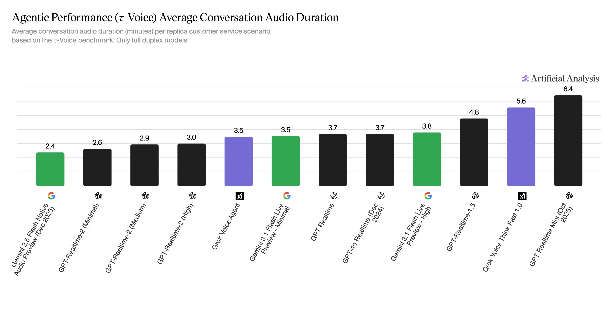

音频推理题答得对不对
Artificial Analysis 的 Big Bench Audio 用 1,000 道音频题测模型能否理解并回答推理问题。它测智力，但不是完整客服流程。
这条帖子宣布 Artificial Analysis 为 Speech-to-Speech 模型新增 Agentic Performance 评测：让模型在模拟客服电话中多轮对话、遵守业务政策、调用工具， 最后用确定性的数据库终态检查它是否真的解决了用户问题。
Problem & Context
语音模型以前常被拆成几类能力来测：听写、音色、推理题、对话自然度、延迟。 这些都重要，但都不能直接回答客服系统最关心的问题。
传统语音系统通常可以被拆成 ASR → LLM → TTS：先把用户语音转文字，再让语言模型推理和调用工具，最后再把回答转成语音。 原生 Speech-to-Speech 模型试图把这些环节更深地合在一起，直接接收音频、直接输出音频。
这带来一个很诱人的产品承诺：更低延迟、更自然打断、更少工程拼接、更像真人通话。但问题也随之变复杂。 一旦模型听错口音、漏掉账单号、在用户停顿时抢话、错误调用工具、或没有遵守退款政策，最终表现不是“声音稍差”，而是用户问题没有解决。
这条帖子的关键转向是：voice agent 不应该只按“语音智力”或“自然对话”排名，而要按真实任务闭环能力排名。
Artificial Analysis 的 Big Bench Audio 用 1,000 道音频题测模型能否理解并回答推理问题。它测智力，但不是完整客服流程。
Full Duplex Bench 子集测停顿、轮次、打断、backchannel。它测“会不会聊天”，但不保证工具和业务状态正确。
τ-Voice 让模型扮演客服 agent，使用工具和政策文档处理真实域任务，最终按数据库状态判定成功。
Evaluation Setup
这个评测的对象不是单轮问答，而是一个语音客服闭环：用户带着目标来电，模型要多轮沟通并操作后台系统。
从 Airline、Retail、Telecom 三个域中抽取一个具体客服场景，例如改签航班、争议收费、排查通信服务问题。
模拟用户带着目标来电。语音由合成声音生成，包含不同 persona、口音、背景噪声和网络丢包条件。
被测模型被提示为客服 agent，拿到领域政策文档和可调用工具，需要边听边说、持续推进任务。
模型不能只口头安抚用户，还要查询、修改或确认后台状态，正确填参数、遵守业务规则。
评估器检查最终动作和数据库终态是否等于唯一 ground truth。成功就是通过，失败就是没有完成。
| 维度 | 本评测中的含义 | 为什么重要 | 常见误解 |
|---|---|---|---|
| 任务类型 | 真实客服复刻任务，覆盖航空、零售、电信。 | 比开放闲聊更接近企业语音客服。 | 不是简单语音问答题，也不是声音质量测试。 |
| 输入 | 模拟用户的多轮语音通话，包含口音、噪声、丢包等现实扰动。 | 真实电话渠道不会给模型干净文本。 | 不是把文字 benchmark 直接喂给模型。 |
| 输出 | 模型以语音客服形式回复，同时调用工具改变后台状态。 | 客服系统的产物是业务状态改变，不只是回复文本。 | 说“我帮你处理了”不等于真的处理成功。 |
| 指标 | Task Completion / pass@1：单次尝试中成功解决场景的比例。 | 接近真实线上一次通话的成功率。 | 不是 best-of-n，也不是人工主观满意度。 |
| 判分对象 | 最终动作和数据库状态是否匹配 ground truth。 | 比 LLM judge 对回答“听起来不错”的判断更硬。 | 它不能完整衡量语气、同理心、品牌体验。 |
τ-Voice 的难点在于“多种能力叠加”：听懂脏音频、保持长程状态、遵守政策、正确调用工具、处理用户纠正、在自然对话节奏下推进流程。 任何一个环节失败，最终都可能被算作任务失败。
Evidence & Results
结果最值得看的不是“谁第一”本身，而是最高分只有 52.1%： 这说明目前最强语音 agent 在现实客服条件下也仍未达到稳定自动化。

| 排名 | 模型 | 总体任务完成率 | 一句话解读 |
|---|---|---|---|
| 1 | Grok Voice Think Fast 1.0 | 52.1% | 明显领先，但绝对成功率仍意味着大量场景需要 fallback 或人工接管。 |
| 2 | GPT-Realtime-2 High | 39.8% | 强语音模型，但在端到端客服闭环上和榜首差距明显。 |
| 3 | GPT-Realtime-1.5 | 38.8% | 接近 GPT-Realtime-2 High，说明版本/配置差异不能只按新旧判断。 |
| 4 | Gemini 3.1 Flash Live Preview - High | 37.7% | 接近 OpenAI 高配模型，但不同域表现仍需拆开看。 |
| 5 | GPT-Realtime-2 Medium | 37.4% | 与 High 接近，提示配置成本和成功率之间需要单独权衡。 |
| 6-12 | GPT-Realtime-2 Minimal / GPT Realtime / GPT-4o Realtime / Grok Voice Agent / Gemini Minimal / Gemini 2.5 / GPT Realtime Mini | 30.8% → 15.1% | 低配、旧模型或非专门优化版本在真实任务闭环中衰减更明显。 |
Grok Voice Think Fast 1.0 在 Airline / Retail / Telecom 上分别约为 58% / 44% / 54%。 GPT-Realtime-2 High 的 Airline 约 63%，但 Retail 和 Telecom 明显低很多。总分会掩盖业务域弱点。
如果一个客服系统一半任务仍失败，它必须有人工接管、二线升级、任务分流和高风险操作确认。 榜首只说明相对领先，不代表可以无兜底上线。

Interpretation
文本 agent 的输入通常是干净、完整、可回看、可截断重试的文字；语音 agent 需要在时间、音频质量和交互节奏压力下做同一件事。
口音、噪声、丢包不是独立的 ASR 错误。一个航班号或账单金额听错，会直接传导到工具参数和最终数据库状态。
模型抢话、误判停顿、把 backchannel 当新请求，都会导致信息缺失或流程跑偏。自然对话不是装饰能力。
客服任务常要跨多轮记住身份、订单、政策限制、用户更正和工具返回。任何一次状态漂移都可能导致失败。
改签、退款、账单争议都有规则。模型要在用户压力下坚持政策，而不是生成看似友好的错误承诺。
真实客服不是只回答问题。模型必须选对工具、填对参数、解释工具返回，并在失败时恢复。
高成功率但对话过长会增加成本；短对话但快速失败也不可接受。生产系统需要联合优化。
Grok 这次领先，说明它在“真实语音 + 多轮客服 + 工具调用 + 政策约束”的组合任务上表现更稳定。 但它并不证明 Grok 在所有语音体验、所有行业、所有生产指标上都最好。
Limitations
τ-Voice 比传统语音榜单更接近生产，但仍然不是生产环境本身。 读榜单时要把“方向性信号”和“可上线结论”分开。
Airline、Retail、Telecom 很有代表性，但医疗、金融、销售、教育和个人助理的失败模式会不同。
模拟能保证可复现和可控扰动，但真人会有更复杂的情绪、犹豫、跨语言混说、恶意试探和非线性表达。
最终状态很硬，适合测任务完成；但它不完整衡量同理心、语气、解释质量、合规风险和品牌体验。
如果要为真实业务选型，应该在自己的任务、政策、工具、用户口音分布、网络环境和失败成本上重新评测。 这个榜单是高质量起点，不是采购结论。
Insight & Implications
这条帖子真正有价值的地方，是把语音模型竞争从“体验型 demo”拉回“任务型可靠性”。
我的判断是，下一阶段 voice agent 的核心评估框架应该从单一榜单变成四张表： Audio Intelligence 看能不能理解和推理； Conversational Dynamics 看能不能自然地轮次交互； Agentic Task Completion 看能不能通过工具把任务完成； Production Economics 看成本、时长、延迟、失败恢复和人工接管率。
这条帖子新增的是第三张表，而且它对客服、运营、售后、预约、金融服务这类场景最关键。 因为用户最终买的不是“模型说话像真人”，而是“我的问题被解决了，而且没有违反业务规则”。
语音 agent 不能只优化声音和低延迟，还要在工具 schema、状态跟踪、政策检索、错误恢复、人工接管协议上做系统设计。 benchmark 里的失败大概率不是单一模型分数能修掉的，而是端到端系统工程问题。
现阶段更合理的上线方式是任务分级：低风险、规则简单、可快速恢复的任务让 voice agent 自动处理； 高风险、长链路、强合规任务保留确认、审计和人工兜底。
| 如果你要落地 Voice Agent | 应该额外测什么 | 原因 |
|---|---|---|
| 客服自动化 | 本业务真实历史工单、真实政策、真实工具 sandbox、人工接管率 | τ-Voice 是通用复刻场景，不能代表你的业务尾部 case。 |
| 高风险操作 | 身份核验、越权拒绝、用户诱导、合规话术、审计日志 | 成功完成任务不等于合规完成任务。 |
| 全球用户 | 本地口音、弱网、电话压缩、多语言混说、背景噪声 | 语音鲁棒性高度依赖用户分布。 |
| 成本敏感业务 | 平均通话时长、TTFA、输出音频价格、失败后人工成本 | 更高成功率可能伴随更长通话和更高单位成本。 |
Source Map
原帖来自 X，但解释它不能只看推文文案。这个报告把原帖、两张图、Artificial Analysis 榜单与方法页、 τ-Voice 论文和 Sierra 背景说明放在一起读。
材料为原帖、图表帖和回复。原帖宣布新增 S2S agentic performance benchmarking。
Artificial Analysis 的 S2S 页面给出 Speech Reasoning、Conversational Dynamics、Agentic Performance、TTFA 和价格维度。
说明 Agentic Performance 基于 τ-Voice，指标为 Task Completion pass@1，按最终数据库状态判定成功。
Ray、Dhandhania、Barres、Narasimhan 2026 年论文，定义 full-duplex voice agent 的真实客服任务评测。
用作模型背景参考。厂商自述需要和第三方榜单分开看，不能直接当作独立评测证据。
本报告的主材料是公开的 X 线程与网页；原帖短链指向 https://artificialanalysis.ai/speech-to-speech。
原帖的 methodology 短链跳转到旧路径后返回 404，因此以实际可访问的
/methodology/speech-to-speech-benchmarking 页面为准。